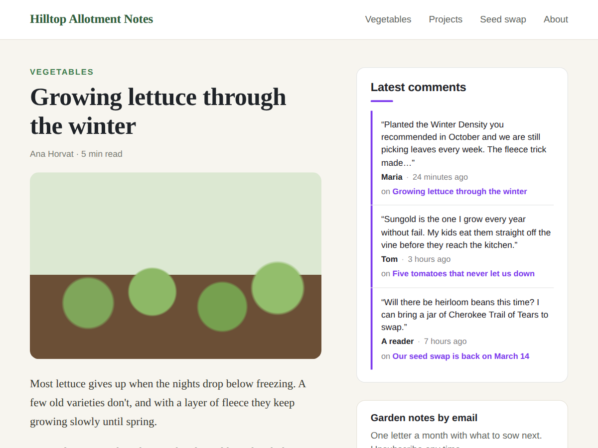

Murmur
Show your readers' newest comments in a sidebar
- Newest reader comments from every blog post
- Each comment links to the post it is on
- First names only, never emails or photos
- Up to 10, category and word filter (Premium)

What it does
Murmur shows the newest comments your readers left on your blog, in one small strip you can put in a sidebar, under an article or on the home page. Visitors see that people read and answer your posts, and each comment links straight to the post it was written on.
New comments appear by themselves within about five minutes. Nothing to copy by hand, and a comment you hide or delete drops out too.
Each comment shows a short excerpt, the time it was written, the post title and the writer's first name. The name comes from the member's public profile; anyone without one shows as "A reader". Emails, photos and last names are never shown. Your own replies are left out unless you switch that on.
The dashboard page lists your 10 newest comments and marks the ones that still need a reply, so you can answer readers quickly.
The free plan shows your 3 newest comments in a list with your own title, colours and font. Premium shows up to 10, keeps a strip to one category, hides comments that contain words you list, lets you set how long each comment is, and adds speech bubble and compact styles.
The widget does not track visitors or set cookies. It reads comments your blog already keeps.
Price
Free
- Your 3 newest blog comments
- Name, time and post under each one
- Your title, colours and font
- No branding on your site
Premium
$4/month, or yearly with 20% off
- Up to 10 comments
- One category per strip
- Hide comments that contain words you list
- Comment length, bubble and compact styles